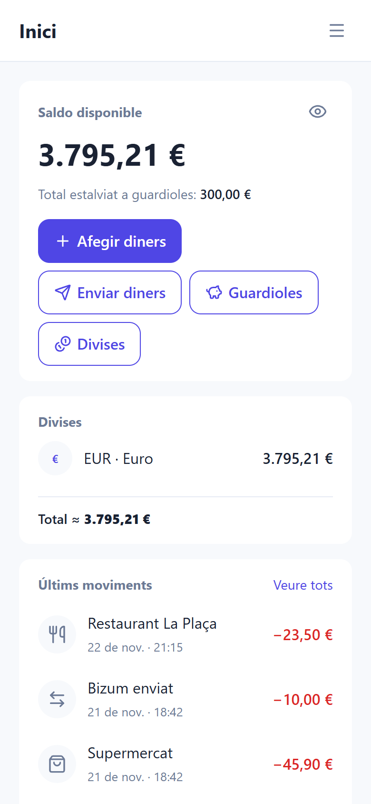
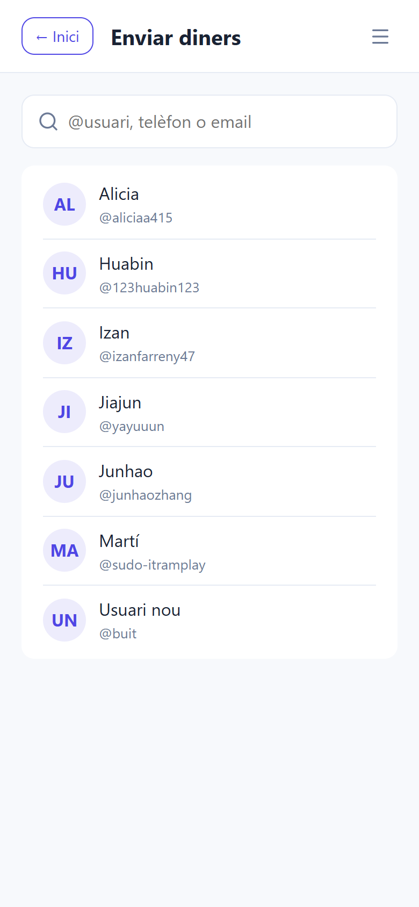
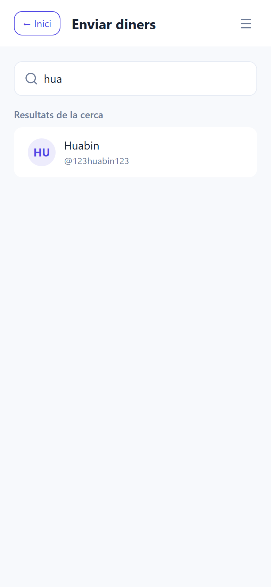
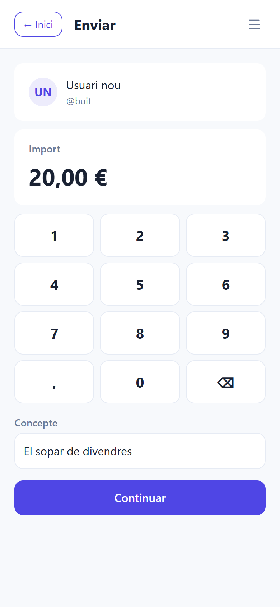
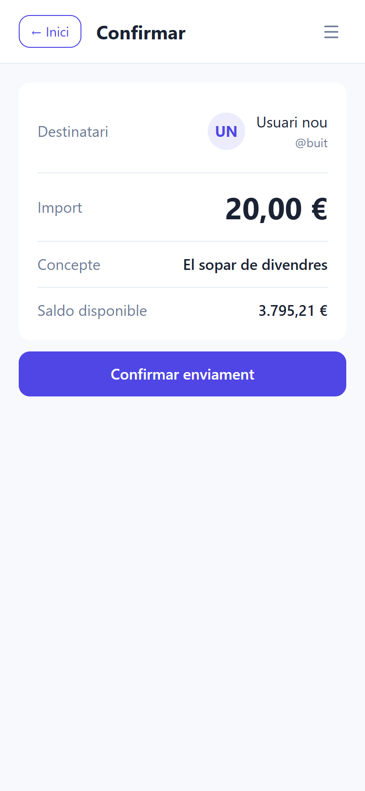
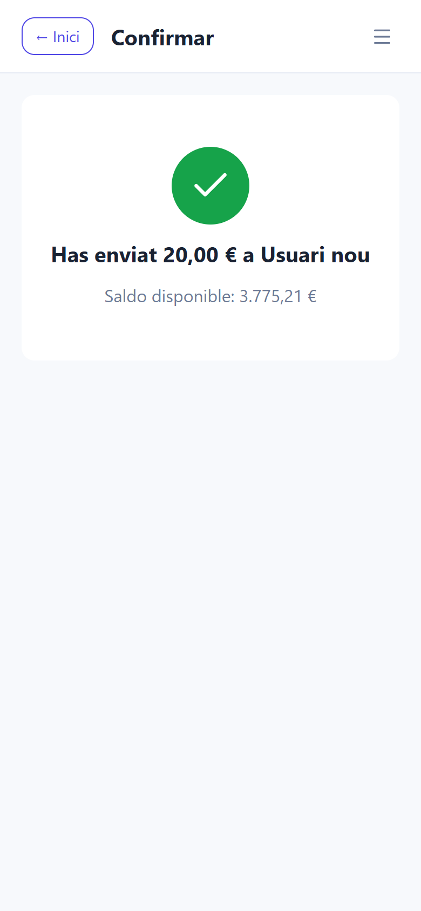
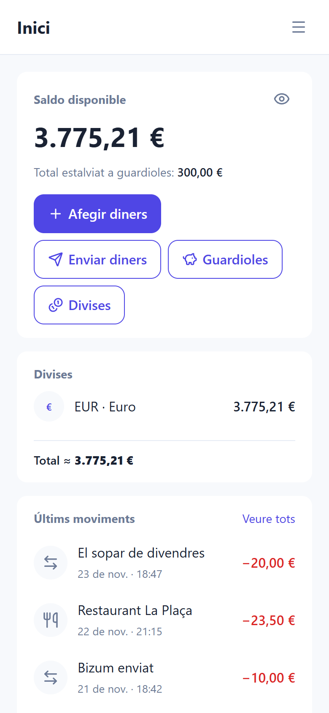
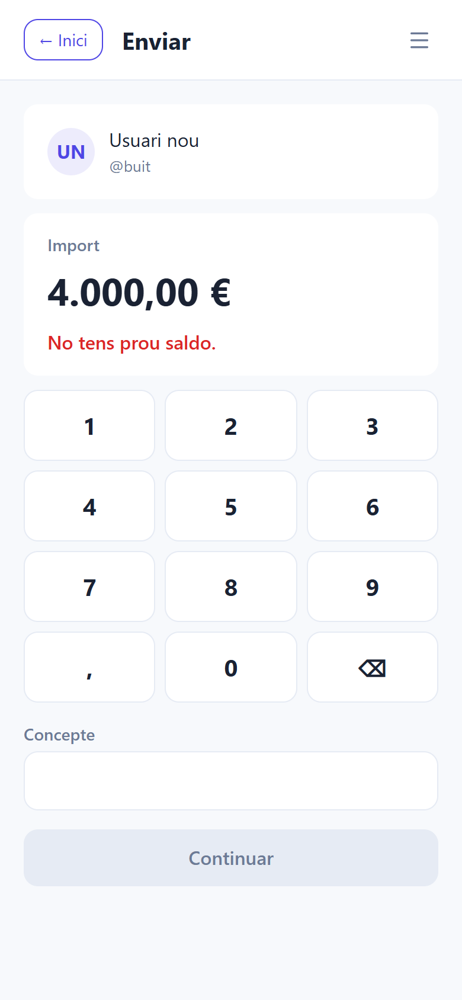
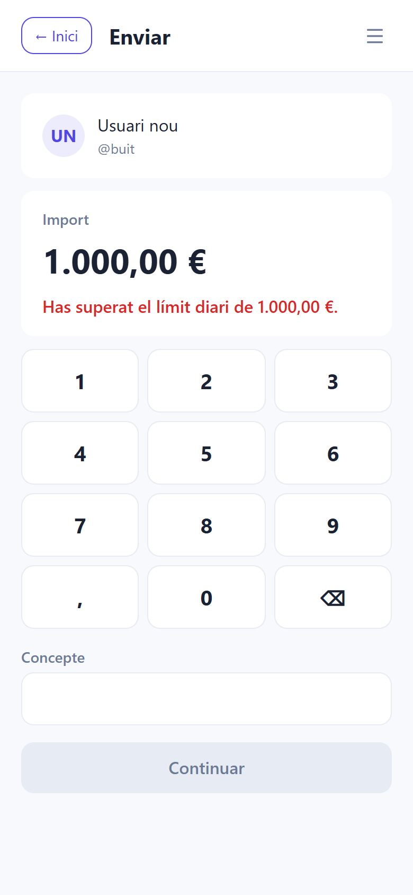
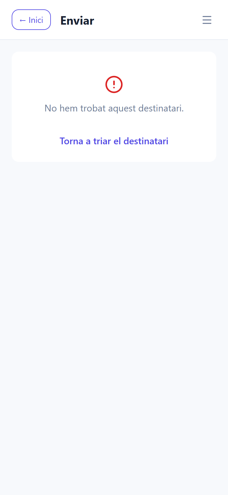

El botó «Enviar diners» és l'entrada a enviar diners.

La llista inicial d'usuaris, per ordre alfabètic.


Destinatari, import amb el teclat numèric i concepte.

Destinatari, import, concepte i saldo disponible.

Tic verd, «Has enviat 20,00 € a Usuari nou» i el saldo nou.

Saldo nou i el moviment «−20,00 €» a dalt.

«No tens prou saldo.» i «Continuar» desactivat.

1.000,00 € supera el límit diari.

«No hem trobat aquest destinatari.».
